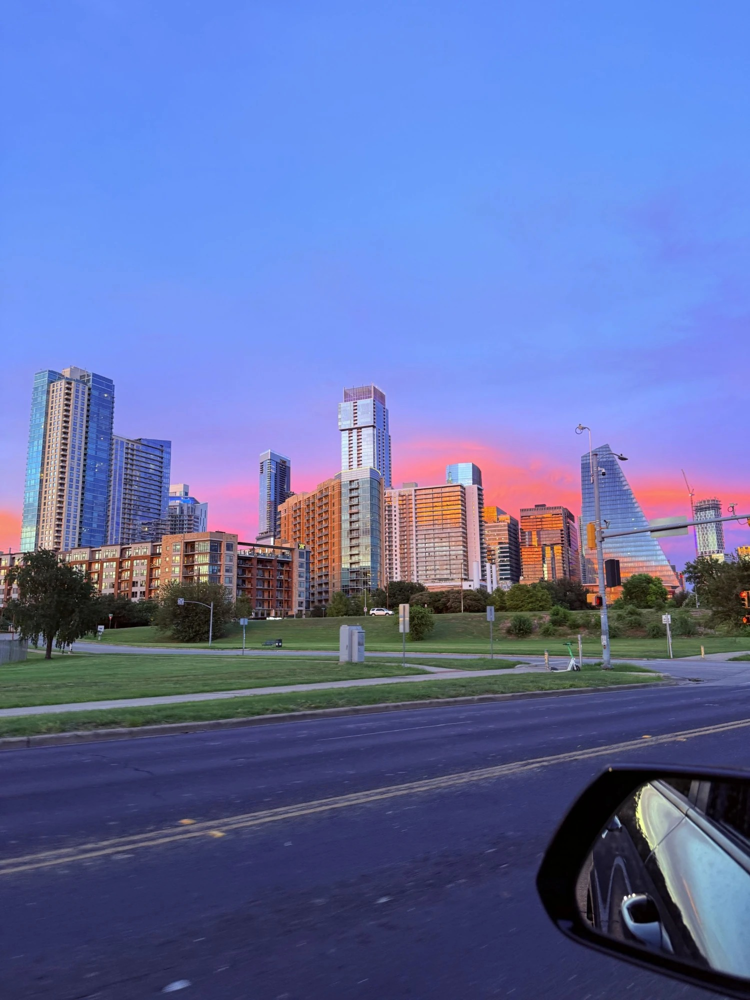

PES General Meeting, Austin
Three days in Austin for the IEEE PES General Meeting. First time in the city, and I chose the back half of July to do it.
Everyone warns you about the heat and everyone is right. What nobody mentions is that the evenings are the payoff. We came back into downtown at dusk on the first night and the sky did the thing you see below, which I took through a half-open car window at a red light and have not stopped looking at since.

The walk along the river is the best part of the city, and I say that having tried fairly hard to find something better. The path hugs the water, the skyline sits on the far bank the whole way around, and the neighborhoods that back onto it are the sort you can wander into without a plan and still come out having eaten well. I walked more of it than my shoes were built for.
Sixth Street I liked more than I expected to. Doors open, four bands audible at once, none of them apologizing for it. It should not work as well as it does.
The reason I was there
The meeting itself was my first real look at how the Student Branch Chapters and Young Professionals groups inside IEEE PES actually run. Most of what they do is unglamorous and matters enormously: keeping a chapter alive across graduating cohorts, putting a first-year student in a room with someone who has spent thirty years on protection or on machines, running the events that turn a vague interest in power into a direction.
Sitting in on those sessions and meeting the people who do that work was the part of the trip I did not anticipate enjoying most. Plenty of them volunteer the time on top of full research loads or full jobs.

The point they kept coming back to is one worth repeating. A student’s access to expertise is mostly an accident of which school they landed at and who happened to be down the hall. Programs like these are how that stops being an accident: they hand a student in a small department the same mentors, the same conference rooms and the same conversations that a student at a large one gets for free. It was a genuine privilege to be introduced to the folks holding that up, and I came home with a longer list of people to stay in touch with than I brought.
Verdict on Austin: I understand the fuss. Verdict on late July in Texas: I would go back in a cooler month and I would go back either way.